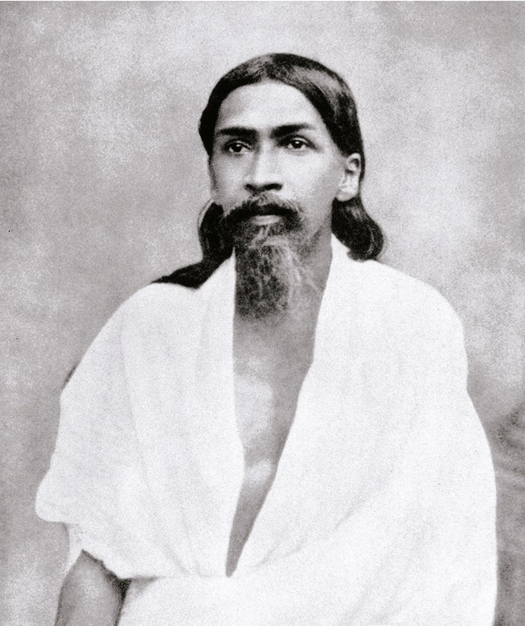

Who Was Sri Aurobindo?
Sri Aurobindo, born Aurobindo Ghose, was an Indian philosopher, yogi, poet, and former political revolutionary who lived from 1872 to 1950. He is remembered as one of the most systematically ambitious philosophers of modern India, developing an evolutionary metaphysics that treats the entire cosmos, from inert matter through life and mind, as a progressive unfolding of consciousness moving toward an ultimate spiritual fulfillment.
Aurobindo is especially associated with the concept of the Supermind, or supramental consciousness, a plane of reality he described as capable of descending into and transforming ordinary earthly existence. Rather than treating spiritual liberation as an escape from the material world, his philosophy insists that the ultimate goal of evolution is the full manifestation of divine consciousness within matter and life itself, not merely the individual soul's departure from them.
Educated in England from early childhood and initially active as a leading figure in India's revolutionary independence movement, Aurobindo underwent a series of profound spiritual experiences, including a transformative period of imprisonment, that redirected the whole of his later life toward the systematic development of what he called Integral Yoga and its accompanying philosophical framework, pursued from his later home in Pondicherry until his death in 1950.
Because Aurobindo's philosophy synthesizes classical Vedanta, Vedic hymnody, Western evolutionary theory, and his own extensive personal spiritual practice into a single unusually ambitious system, scholars continue to debate how best to situate his thought within the broader history of Indian and world philosophy. His importance nonetheless remains considerable, since his vision of spiritual evolution and his founding of the Pondicherry Ashram, later followed by the international community of Auroville, continue to shape spiritual and philosophical discussion well beyond his own lifetime.
Sri Aurobindo: Quick Facts
- Name — Sri Aurobindo (Aurobindo Ghose)
- Period — 1872–1950
- Born in — Kolkata (Calcutta), Bengal, India
- Philosophical period — Modern Indian philosophy
- Associated with — Integral Yoga and evolutionary spiritual metaphysics
- Known for — The concept of the Supermind and the philosophy of involution and evolution
- Major works — The Life Divine, The Synthesis of Yoga, and Savitri
- Early career — Leading figure in India's revolutionary independence movement
- Later home — Pondicherry, where he founded the Sri Aurobindo Ashram
- Key collaborator — Mirra Alfassa, known as The Mother
Aurobindo and Modern India's Encounter with Evolution and Revolution

Aurobindo's intellectual formation took place at the intersection of two major currents shaping late colonial India: the growing political movement against British rule, in which he became a prominent and outspoken early leader, and the modern encounter between classical Indian philosophy and Western intellectual developments, including evolutionary theory and post-Kantian idealist philosophy, both of which Aurobindo had studied closely during his education in England.
This period also saw a broader Indian intellectual project of reinterpreting classical Vedanta for the modern world, pursued by contemporaries such as Sarvepalli Radhakrishnan through academic philosophy and by Tagore through poetry and humanist reflection, though Aurobindo's own approach proved distinctive in its systematic attempt to integrate biological and cosmological evolution directly into Vedantic metaphysics.
Aurobindo's transition from revolutionary politics to spiritual philosophy was decisively shaped by his experience of imprisonment during the Alipore Bomb Case of 1908, during which profound spiritual experiences, including what he described as visions and an intensified inner spiritual life while reading the Bhagavad Gita in his cell, redirected his life's energy away from direct political activism and toward sustained spiritual practice and philosophical work.
In the intellectual environment associated with Aurobindo, philosophical reflection therefore combined an inherited Vedantic framework, direct personal yogic experience, and serious engagement with modern Western scientific and philosophical thought, treating none of these sources as sufficient on its own but instead working to synthesize them into a single, comprehensive account of cosmic and spiritual development.
What Did Sri Aurobindo Mean by Spiritual Evolution?
Sri Aurobindo's idea of spiritual evolution is one of the central features of his philosophy. Although he accepted the importance of biological evolution, his theory was not simply a religious version of Darwinian evolution. He was primarily concerned with the development of consciousness, arguing that the emergence of life and mind points toward possibilities that extend beyond the present limitations of ordinary human consciousness.
According to Sri Aurobindo, evolution can be understood as a progressive emergence of what is already involved or concealed within existence. This complementary idea is often called involution: the Divine Consciousness is not produced from nothing by material evolution but is understood as already present in a concealed form within the deepest levels of existence. Evolution is the gradual manifestation of these hidden possibilities.
In this account, Matter gives rise to the emergence of Life, and Life eventually provides the conditions for the development of Mind. Human beings represent the highest stage of mental evolution presently known in this philosophical scheme, but Sri Aurobindo argued that the mind should not be regarded as the final possible stage. Just as life exceeded purely material organization, a higher form of consciousness might exceed the ordinary human mind.
This idea gave Sri Aurobindo's philosophy a strongly future-oriented character. Humanity was not, in his view, necessarily the completed end of evolution but a transitional stage capable of participating in a further development of consciousness. He associated this future possibility with the emergence of a greater spiritual and ultimately supramental consciousness.
Spiritual evolution therefore connects Sri Aurobindo's metaphysics with his practical philosophy of yoga. Individual spiritual practice was not understood merely as a private escape from the world but as participation in a wider movement toward the manifestation of greater consciousness. Integral Yoga sought to make this transformation a conscious process within human life rather than treating evolution as an entirely unconscious development.
This theory should nevertheless be understood as a philosophical and spiritual interpretation of evolution, rather than a scientific theory intended to replace evolutionary biology. Sri Aurobindo used the concept of evolution to address metaphysical questions about consciousness, human development, and the future possibilities of existence that lie beyond the ordinary operations of the mind.
Who Was Sri Aurobindo and What Did He Do?
Aurobindo was born in Kolkata and sent to England at the age of seven for his education, where he received rigorous training in classical languages and Western literature at St. Paul's School and later at Cambridge University, an upbringing that left him, by his own later account, largely unfamiliar with Indian languages and culture until his return to India as a young man.
After returning to India in 1893, Aurobindo worked initially in administrative and educational positions before becoming increasingly involved in the movement for Indian independence, emerging as one of the most prominent early advocates of complete political independence, editing the influential nationalist newspaper Bande Mataram, and helping shape a more assertive current within the broader independence movement.
In 1908, Aurobindo was arrested and imprisoned in connection with the Alipore Bomb Case, an experience during which he underwent profound spiritual experiences that he later described as decisive turning points in his life, including sustained periods of deep meditative absorption and a powerful sense of divine presence and guidance while reading the Bhagavad Gita.
Following his acquittal, Aurobindo gradually withdrew from active politics and relocated in 1910 to Pondicherry, then under French colonial administration, where he would remain for the rest of his life, devoting himself entirely to yoga, spiritual practice, and the systematic development of his philosophy, eventually joined by the French spiritual collaborator Mirra Alfassa, known to his followers as The Mother, who became central to the growing ashram community that formed around him.
Aurobindo continued writing and developing his philosophical and yogic system until his death in Pondicherry in 1950, leaving behind an extensive body of prose and poetry, including his massive philosophical work The Life Divine and his epic poem Savitri, while The Mother continued and extended his work, later founding the international community of Auroville in 1968 as a practical expression of his broader vision.
What Did Sri Aurobindo Believe?
Aurobindo's philosophy presents an ambitious synthesis of classical Vedanta and a specifically spiritual reading of evolutionary development, arguing that the entire history of the cosmos, from the emergence of matter through the appearance of life and eventually mind, represents a single continuous process of consciousness gradually manifesting itself more fully within material existence.
At the center of this philosophy lies the twin concepts of involution and evolution: Aurobindo taught that the infinite consciousness of Brahman first descends, or involves itself, into progressively denser and more limited forms, ultimately producing seemingly inert matter, before then evolving back upward through successive stages of increasing consciousness, from matter to life, from life to mind, and, in Aurobindo's account, eventually toward a still higher stage he called the Supermind.
Unlike more austere interpretations of Advaita Vedanta that treat the material world as ultimately illusory or as a lower reality to be transcended, Aurobindo consistently affirmed the genuine reality and spiritual significance of the material and biological world, arguing that the purpose of spiritual evolution is not to escape matter and life but to transform them completely through the descent of higher consciousness into their very substance.
This vision extends into Aurobindo's understanding of individual spiritual practice, which he presented not as a private pursuit of personal liberation alone but as directly connected to the wider cosmic process of evolution, in which individual spiritual transformation was understood to contribute meaningfully to the eventual spiritual transformation of the whole of earthly existence.
Scholars of Indian philosophy continue to debate how closely Aurobindo's system should be classified within classical Vedanta given its distinctive engagement with evolutionary biology and Western philosophy, but his work is consistently recognized as one of the most systematically ambitious and original bodies of modern Indian philosophical and spiritual thought.
The Life Divine: Aurobindo's Major Metaphysical Work
The Life Divine, first serialized over many years and later published as a single extensive volume, stands as Aurobindo's most systematic philosophical work, presenting a detailed metaphysical account of the relationship between Brahman, the manifest universe, and the evolutionary process through which Aurobindo believed the two were being progressively reconciled.
The work opens by directly confronting the classical Vedantic problem of how an infinite, unified Brahman could give rise to a finite, apparently divided material world, developing Aurobindo's distinctive answer through the concept of involution, in which the infinite deliberately assumes finite and limited forms as part of a larger creative and spiritual purpose rather than through mere illusion or error.
Across its extensive argument, The Life Divine engages seriously with both classical Vedanta commentary and modern Western philosophy and science, including direct engagement with evolutionary biology, in an effort to construct a metaphysical system capable of accounting for the observed development of increasingly complex forms of life and consciousness within a fundamentally spiritual framework.
Because of its scope and philosophical ambition, The Life Divine remains the primary reference point for scholarly engagement with Aurobindo's metaphysics, treated by many commentators as one of the most systematically comprehensive works of philosophy produced in modern India.
The Supermind: Aurobindo's Vision of Supramental Consciousness
The Supermind, or supramental consciousness, represents Aurobindo's most distinctive and philosophically original contribution, describing a plane of reality that he held to exist beyond ordinary human mind, characterized by a direct and unmediated knowledge of truth rather than the indirect, fragmented understanding Aurobindo associated with ordinary mental cognition.
Aurobindo taught that the emergence of mind from life, and of life from matter, represented earlier stages in a single continuous evolutionary movement, and that this same evolutionary process was now poised, in his own historical moment, to produce a further and decisive transition: the descent of the Supermind into earthly existence, capable of transforming human consciousness, and eventually even the physical body itself, far more completely than mental or spiritual development alone could achieve.
Unlike more traditional accounts of spiritual realization, which often emphasize the individual soul's ascent toward, and eventual absorption into, a higher reality, Aurobindo's vision of the Supermind emphasizes instead a descent, in which the higher consciousness comes down into and transforms ordinary embodied existence, reflecting his broader conviction that authentic spiritual progress must ultimately manifest within matter and life rather than departing from them.
Aurobindo and his collaborator The Mother both described extensive personal efforts to work toward and facilitate this supramental descent through sustained yogic practice, and this concept remains the most widely discussed and, among scholars, most contested element of Aurobindo's entire philosophical system, given the considerable difficulty of assessing such claims through ordinary philosophical or empirical methods.
Integral Yoga: Aurobindo's Synthesis of Spiritual Practice
Integral Yoga, or Purna Yoga, is Aurobindo's practical spiritual method, developed most fully in his work The Synthesis of Yoga, which draws together and reworks several traditional paths of Indian spiritual practice, including the paths of knowledge, devotion, and action, into a single integrated approach rather than treating them as separate and competing options.
Where traditional yogic paths often aim primarily at achieving individual liberation, or moksha, understood as an escape from worldly existence, Aurobindo's Integral Yoga is explicitly oriented toward the transformation of the whole of life, including the body, emotions, and everyday activity, rather than the withdrawal from these dimensions of existence in pursuit of a purely transcendent spiritual state.
This practical orientation connects directly to Aurobindo's broader evolutionary metaphysics, since Integral Yoga is presented not merely as a technique for personal spiritual advancement but as a conscious participation in the larger cosmic process of evolution, understood as actively assisting the eventual descent of supramental consciousness into ordinary human life.
Aurobindo's ashram at Pondicherry became the primary institutional setting in which Integral Yoga was practiced and refined, combining sustained meditative discipline with engagement in practical, everyday work, reflecting Aurobindo's conviction that spiritual transformation should express itself through ordinary activity rather than requiring withdrawal from it.
Savitri: Aurobindo's Epic Poem of Spiritual Vision
Savitri: A Legend and a Symbol is Aurobindo's major poetic work, an extended epic composed and revised over many years, retelling and reinterpreting an ancient Vedic legend of the princess Savitri, who through love and spiritual power overcomes death itself to reclaim her husband's life.
Aurobindo transforms this traditional narrative into an extended vehicle for expressing his own philosophical and spiritual vision, using the poem's symbolic structure to explore themes of cosmic evolution, the descent of higher consciousness, and the eventual spiritual transformation of earthly existence that form the core of his broader philosophical system.
Aurobindo himself, along with many of his followers, described Savitri as more than an ordinary literary composition, treating its verses as a direct expression and vehicle of spiritual experience rather than merely a poetic illustration of ideas developed elsewhere in his prose philosophical writing.
Because of its considerable length and dense symbolic and philosophical content, Savitri remains one of the most extensively studied works within the Aurobindonian tradition, continuing to be read both as a major work of modern English- language poetry and as a significant primary source for understanding Aurobindo's mature spiritual philosophy.
The Mother, the Pondicherry Ashram, and Auroville
Mirra Alfassa, a French-born spiritual collaborator known to Aurobindo's followers as The Mother, became an essential partner in Aurobindo's spiritual and institutional work after her arrival in Pondicherry, eventually taking direct responsibility for the administration and spiritual guidance of the growing ashram community that had formed around Aurobindo.
Following Aurobindo's death in 1950, The Mother continued to develop and extend his philosophical and spiritual vision, maintaining and expanding the Sri Aurobindo Ashram while continuing to write and teach extensively on the practical application of Integral Yoga within the daily life of the ashram community.
In 1968, The Mother founded Auroville, an international experimental township near Pondicherry explicitly conceived as a practical expression of Aurobindo's vision of human unity and spiritual evolution, intended to bring together residents from many different nations and backgrounds in a shared community dedicated to spiritual and social transformation.
Through the continued work of The Mother and the ongoing activities of both the Pondicherry Ashram and Auroville, Aurobindo's philosophy has continued to develop an active institutional and practical presence well beyond his own lifetime, distinguishing his legacy from philosophers whose influence rests primarily on written text alone.
Aurobindo Compared with Classical Advaita Vedanta
Aurobindo's philosophy is often discussed in relation to the classical Advaita Vedanta of Adi Shankaracharya, since both systems share the underlying conviction that ultimate reality is a single, undivided Brahman, even as they differ substantially in how they understand the status and purpose of the manifest material world.
Where Shankaracharya's classical Advaita generally treats the empirical world as a lower order of reality, ultimately superseded through the realization of one's identity with an unchanging Brahman, Aurobindo consistently affirmed the genuine reality and evolving spiritual significance of the material world, rejecting readings of Vedanta that treat matter and life as obstacles to be transcended rather than as arenas for continuing spiritual manifestation.
Aurobindo's philosophy also engages directly with modern evolutionary biology in a manner without clear precedent within classical Vedanta commentary, integrating the observed historical development of increasingly complex biological forms directly into his account of Brahman's spiritual self- manifestation, a synthesis that distinguishes his system sharply from both classical Advaita and from purely secular evolutionary theory.
This comparison illustrates how Aurobindo's contribution to Indian philosophy operates less as a straightforward continuation of classical Vedanta and more as a deliberate and systematic modern reconstruction, retaining Vedanta's fundamental metaphysical conviction of underlying unity while substantially reworking its account of matter, evolution, and the ultimate purpose of spiritual practice.
Sri Aurobindo: Main Philosophical Ideas
Because Aurobindo's philosophical output spans extensive prose treatise, poetry, and decades of correspondence with disciples, his central ideas are often summarized under a small number of key doctrines drawn from across his career.
Involution and Evolution
Aurobindo taught that infinite consciousness first descends into limited material forms before evolving back upward through matter, life, mind, and eventually the Supermind.
The Supermind
The Supermind represents a plane of consciousness beyond ordinary mind, capable of descending into and transforming earthly existence rather than merely allowing escape from it.
Integral Yoga
Aurobindo's Integral Yoga synthesizes traditional yogic paths into a single practice aimed at transforming the whole of life rather than achieving individual withdrawal from it.
The Reality of Matter and Evolution
Unlike more world-denying interpretations of Vedanta, Aurobindo affirmed the genuine reality and continuing spiritual significance of the material and biological world.
Spiritual Practice as Cosmic Participation
Individual spiritual transformation, in Aurobindo's philosophy, is understood as directly contributing to the larger evolutionary transformation of earthly existence as a whole.
What Do We Actually Know About Aurobindo's Philosophy?
Because Aurobindo lived within well-documented modern history and left an extensive body of published writing, correspondence, and institutional record, his biography is unusually well established compared with many earlier philosophers; the more significant debates concern the interpretation and evaluation of his metaphysical claims rather than uncertainty about the events of his life.
Relatively Well-Attested
- Aurobindo was born in Kolkata in 1872 and died in Pondicherry in 1950.
- He was a leading figure in India's early revolutionary independence movement before turning to spiritual philosophy.
- He authored The Life Divine, The Synthesis of Yoga, and Savitri, among many other works.
- He founded the Sri Aurobindo Ashram in Pondicherry with Mirra Alfassa, The Mother.
- Auroville was founded by The Mother in 1968 as a continuation of his vision.
Widely Discussed Interpretive Themes
- His metaphysics of involution and evolution.
- His synthesis of Vedanta with modern evolutionary theory.
- His concept of Integral Yoga as a path of worldly transformation rather than withdrawal.
Areas of Ongoing Scholarly Debate
- How the concept of the Supermind should be assessed given the difficulty of evaluating such claims through ordinary philosophical or empirical methods.
- How closely Aurobindo's system should be classified within classical Advaita Vedanta versus treated as a distinctly modern reconstruction.
- The relationship between Aurobindo's engagement with evolutionary biology and mainstream scientific evolutionary theory.
- How Savitri should be read, as primarily literary composition or as direct spiritual revelation, and what that distinction means for interpreting the text.
Why Is Sri Aurobindo Important in Philosophy?
Aurobindo is important because he developed one of the most systematically ambitious philosophies of modern India, directly integrating classical Vedanta metaphysics with modern evolutionary thought into a single comprehensive account of cosmic and spiritual development.
His philosophical legacy raises a fundamental question that remains significant for the philosophy of religion and metaphysics: Can spiritual evolution be understood as continuous with, and even actively driving, the biological and cosmological evolution described by modern science, rather than existing as an entirely separate order of reality?
This question has continued to shape discussions in comparative philosophy and the philosophy of religion, as later thinkers examined how Aurobindo's account of involution, evolution, and the Supermind relates to both classical Vedanta and contemporary scientific and philosophical understandings of evolutionary process.
Aurobindo's importance therefore does not depend on resolving every scholarly debate about the status of his metaphysical claims. His significance comes from his role in demonstrating that classical Indian philosophy could be extended into serious, systematic engagement with modern evolutionary thought, a legacy that continues to shape spiritual and philosophical practice at the Pondicherry Ashram and Auroville today.
Sri Aurobindo Explained Simply
Sri Aurobindo was an Indian philosopher and former revolutionary who developed Integral Yoga and an evolutionary philosophy holding that consciousness descends into matter and then evolves back upward toward an ultimate spiritual transformation of earthly life.
Instead of treating the material world as an illusion to be transcended, Aurobindo's philosophy insists that matter and life are genuinely real and are themselves the arena in which higher consciousness, which he called the Supermind, is destined to manifest and transform ordinary existence.
His concepts of involution and evolution and the Supermind remain among the most distinctive and systematically ambitious contributions of modern Indian philosophy to the wider history of metaphysics and the philosophy of religion.
- Philosopher/Yogi: Sri Aurobindo
- Period: 1872–1950
- Tradition: Modern evolutionary Vedanta philosophy
- Major doctrine: Involution and evolution toward the Supermind
- Central concern: The spiritual transformation of matter and life
- Associated practice: Integral Yoga, or Purna Yoga
- Major works: The Life Divine and Savitri
- Founded: The Sri Aurobindo Ashram (with The Mother)
A Principle Central to Aurobindo's Philosophy
“All life is Yoga.”
Frequently Asked Questions About Sri Aurobindo
Who was Sri Aurobindo?
Sri Aurobindo was an Indian philosopher, yogi, and former revolutionary who developed Integral Yoga and an evolutionary metaphysics centered on the descent of a supramental consciousness into Matter, expressed most fully in his major work, The Life Divine.
What is Sri Aurobindo famous for?
Aurobindo is famous for his concept of the Supermind, his philosophy of involution and evolution, his major work The Life Divine, and his founding of the Sri Aurobindo Ashram in Pondicherry.
What did Aurobindo believe?
Aurobindo believed that the cosmos represents a continuous spiritual evolution from matter through life and mind toward an ultimate stage of supramental consciousness, and that this higher consciousness must descend into and transform earthly existence rather than allow escape from it.
What is Integral Yoga?
Integral Yoga, or Purna Yoga, is Sri Aurobindo's synthesis of traditional yogic paths aimed not merely at individual liberation but at the spiritual transformation of the whole of earthly life, including the body and material existence.
What is the Supermind in Sri Aurobindo's philosophy?
The Supermind, or supramental consciousness, is a plane of reality in Sri Aurobindo's metaphysics that exists beyond ordinary mind and is capable of descending into and transforming Matter, marking the next decisive stage in a spiritual evolution already visible in the progression from matter to life to mind.
What is The Life Divine about?
The Life Divine is Aurobindo's major philosophical work, presenting his systematic metaphysics of involution and evolution and arguing that the manifest universe represents Brahman's own progressive spiritual self-expression.
What is Savitri?
Savitri is Aurobindo's major epic poem, retelling an ancient Vedic legend as an extended vehicle for expressing his philosophy of cosmic evolution and spiritual transformation.
Who was The Mother?
The Mother, born Mirra Alfassa, was Aurobindo's French spiritual collaborator who helped found and run the Sri Aurobindo Ashram and later founded Auroville in 1968 to continue his vision.
How is Aurobindo different from Adi Shankaracharya?
Shankaracharya's Advaita treats the material world as a lower reality ultimately transcended through realization of Brahman, while Aurobindo affirmed the genuine reality and evolving spiritual significance of matter and life as the very arena of continuing divine manifestation.
Why is Aurobindo important today?
Aurobindo remains important because his evolutionary synthesis of Vedanta and modern scientific thought continues to shape spiritual and philosophical practice at the Pondicherry Ashram and Auroville, and continues to influence comparative discussions of religion, philosophy, and evolution.
Related Indian Philosophers
Sri Aurobindo belongs to the wider tradition of modern Indian philosophy. Explore philosophers who shaped and responded to many of the same questions about Vedanta, spirituality, and the nature of reality.
Philosophy Branches Connected to Aurobindo
Aurobindo's philosophical legacy is particularly important for metaphysics, where philosophers investigate the nature and structure of reality, and for the philosophy of religion, which examines the relationship between spiritual and material existence.
Why Sri Aurobindo Still Matters
Aurobindo did not simply repeat the arguments of classical Vedanta commentators, nor did he abandon their core metaphysical insight in favor of purely secular evolutionary theory; instead, he constructed one of the most systematically ambitious philosophical syntheses of the modern era, integrating both traditions into a single evolving vision.
Yet the questions associated with Aurobindo remain fundamental to philosophy: Is evolution itself a spiritual process? Can matter and life be transformed rather than merely transcended? What would it mean for a higher consciousness to descend fully into ordinary existence?
The philosophy of involution, evolution, and Integral Yoga he developed across decades of writing and spiritual practice transformed these questions into one of the most comprehensive and enduring bodies of modern Indian philosophical thought. His emphasis on the Supermind, the reality of matter, and spiritual evolution made Sri Aurobindo one of the most significant philosophical figures of the modern era.
Explore Great Philosophers